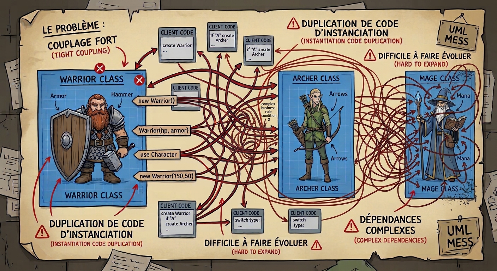
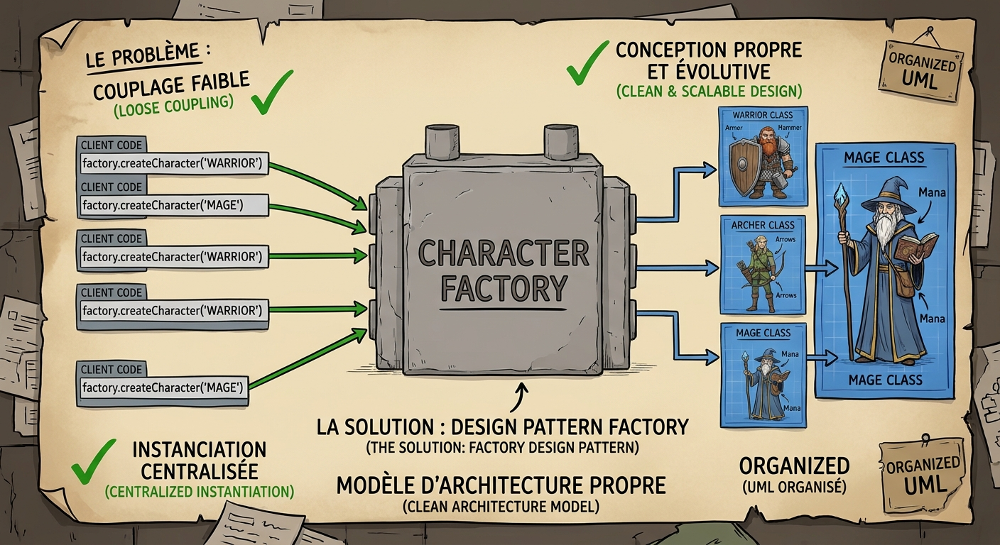
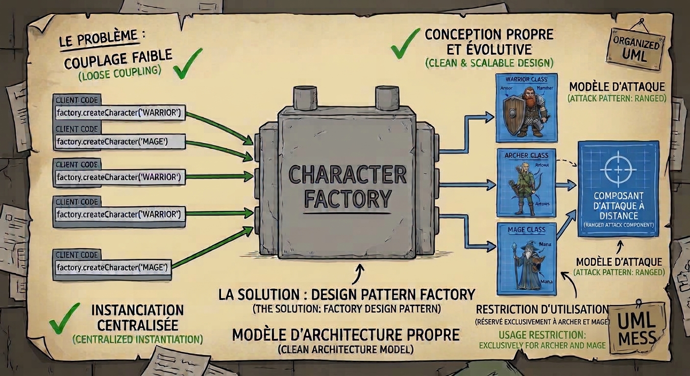

Clean Code & Clean Architecture
C++, CMake & Tests Automatisés
Appliquez les principes fondamentaux de propreté logicielle et d'architecture découplée hors moteur, avec validation instantanée par tests unitaires (doctest).
Pourquoi C++ + CMake + doctest ?
En Clean Architecture, la logique métier (Domain) doit être indépendante du moteur (Unreal Engine). Compiler et tester en C++ pur prend moins d'une seconde.
# 1. Cloner le dépôt git clone <url-du-repo> cd CleanArchitectureTP # 2. Configurer et compiler cmake -B build cmake --build build # 3. Lancer les tests (Red -> Green) ctest --test-dir build -C Debug --output-on-failure
- RED Au départ, les tests unitaires échouent : le code contient des bugs et des code smells.
-
GREEN
Corrigez et implémentez les classes dans
src/jusqu'à ce que les tests passent à 100 %.
Le Clean Code facilite le travail d'équipe
Un code propre est facile à lire, comprendre, tester et modifier. Il aide toute l'équipe à travailler sur le même projet avec moins de friction.
Des noms clairs et une structure cohérente permettent aux collègues de comprendre le code sans dépendre de son auteur.
Des responsabilités bien séparées facilitent les revues de code et réduisent les conflits quand plusieurs personnes contribuent.
Un code simple et testable aide à repérer les erreurs plus tôt et à vérifier qu'une modification ne casse pas l'existant.
L'équipe peut faire évoluer le projet et accueillir de nouveaux membres plus facilement, sans accumuler de complexité inutile.
Quelques principes généraux du Clean Code
Un nom doit aider à comprendre le rôle d'une variable, d'une fonction ou d'une classe sans devoir deviner.
Une fonction devrait accomplir une tâche cohérente. La rendre courte aide souvent à la lire, la tester et la réutiliser.
Quand une même règle métier est répétée, centralisez-la afin de n'avoir qu'un seul endroit à corriger et à tester.
Préférez un flot de contrôle simple, des conditions faciles à lire et peu d'imbrications.
Validez les entrées et rendez explicite le comportement attendu en cas d'erreur ou de donnée invalide.
Des responsabilités bien séparées rendent le comportement plus facile à tester et à modifier avec confiance.
La taille d'une fonction est un repère, pas une limite universelle : une fonction de moins de 100 lignes peut tout de même faire trop de choses. Visez surtout une responsabilité claire et une lecture facile.
Guard Clauses & Early Return
Règle : Évitez les imbrications profondes de if (la "pyramide de la mort"). Traitez immédiatement les cas invalides (dégâts négatifs, cible nulle, personnage mort) via des retours anticipés.
void Warrior::TakeDamage(float rawDamage) { if (IsAlive()) { ❌ Niveau 1 if (rawDamage > 0.0f) { ❌ Niveau 2 if (armor >= 0.0f) { ❌ Niveau 3 float dmg = rawDamage * (1.0f - armor); health -= dmg; } } } }
void Warrior::TakeDamage(float rawDamage) { if (!IsAlive()) return; ✅ Guard État if (rawDamage <= 0.0f) return; ✅ Guard Entrée // Chemin nominal fluide sans indentation const float finalDamage = CombatRules::CalculateDamage(rawDamage, armor); health = std::max(0.0f, health - finalDamage); }
DRY (Don't Repeat Yourself) & Fonctions Pures
Règle : Ne dupliquez pas les formules métier (ex: calcul d'armure) dans plusieurs classes. Centralisez-les dans une fonction pure facilement testable unitairement.
class Warrior { void TakeDamage(float raw) { health -= raw * (1.0f - std::clamp(armor, 0.0f, 1.0f)); ❌ Dupliqué } }; class Archer { void TakeDamage(float raw) { health -= raw * (1.0f - std::clamp(armor, 0.0f, 1.0f)); ❌ Dupliqué } };
namespace CombatRules { [[nodiscard]] inline float CalculateDamage(float raw, float armor) { ✅ Source unique if (raw <= 0.0f) return 0.0f; const float clampedArmor = std::clamp(armor, 0.0f, 1.0f); return raw * (1.0f - clampedArmor); } }
Exercice 1 : Clean Code & Guard Clauses
Objectif : Nettoyer la gestion des dégâts et des points de vie dans Warrior et CombatRules.
- Remplacer les
ifimbriqués par des Guard Clauses (ignorer les dégâts <= 0, gérer la mort). - Borner l'armure entre
0.0fet1.0f(100 %). - Extraire la formule dans
CombatRules::CalculateDamage(raw, armor), puis appeler cette fonction depuisWarrior::TakeDamage()au lieu de recalculer les dégâts localement (DRY).
Interfaces, Polymorphisme & Pattern Fabrique
Règle : Le système de jeu ne doit pas connaître les classes concrètes (Warrior, Archer, Mage). Il manipule l'interface ICharacter et délègue la création à CharacterFactory.
void RunTurn(const std::string& type) { if (type == "Warrior") { ❌ Couplage concret Warrior* w = new Warrior(); w->Attack(); delete w; // Risque de fuite } else if (type == "Mage") { // ... } }
struct ICharacter { virtual ~ICharacter() = default; virtual std::string Attack() = 0; virtual std::string GetCharacterName() const = 0; }; void RunTurn(CharacterType type) { auto character = CharacterFactory::CreateCharacter(type); ✅ RAII unique_ptr if (character) { character->Attack(); ✅ Polymorphisme pur } }
Couplage fort et création dispersée

Création centralisée et dépendances simplifiées

Exercice 2 : Pattern Fabrique & Polymorphisme
Objectif : Découpler la création et l'utilisation des personnages via ICharacter et CharacterFactory.
ICharacteret son implémentation parWarrior,ArcheretMagesont déjà fournies : utilisez-les via l'interface dans la fabrique etGameSystem.- Dans
CharacterFactory::CreateCharacter(CharacterType), créer le personnage correspondant avecstd::make_uniqueet le retourner sous forme destd::unique_ptr<ICharacter>; retournernullptrpour une valeur inconnue. - Dans
GameSystem::RunTurn, obtenir le personnage via la fabrique et appelerAttack()sans dépendre des classes concrètes; retourner une chaîne vide si aucun personnage n'a pu être créé.
Préférer la composition à l'héritage
Règle : Évitez de multiplier les classes de base (RangedCharacter, MagicRangedCharacter). Privilégiez la composition avec un composant dédié (RangedAttackComponent), comme le fait Unreal avec UActorComponent.
class RangedCharacter : public ICharacter { ❌ Hiérarchie rigide protected: float range{20.0f}; bool IsInRange(float dist) const { return dist <= range; } }; // Et si un Mage a aussi de la magie + attaque à distance ? // On tombe dans l'héritage multiple ou la duplication !
class RangedAttackComponent { public: explicit RangedAttackComponent(float maxRange) : maxRange(maxRange) {} bool CanHit(float distance) const { return distance <= maxRange; } }; class Archer : public ICharacter { std::unique_ptr<RangedAttackComponent> rangedComp; ✅ Possède la capacité }; // Mage possède aussi RangedAttackComponent. Warrior ne l'a pas !
Une capacité partagée par composition

Exercice 3 : Composition (RangedAttackComponent)
Objectif : Donner la capacité d'attaque à distance uniquement à l'Archer et au Mage, sans polluer Warrior.
- Créer
RangedAttackComponentgérant la portée (maxRange) et la validation de tir. - Composer
ArcheretMageavec ce composant. - Vérifier que
Warriorne possède pas de composant à distance.
Bilan de l'Atelier (1h30)
Vous avez appliqué les 3 piliers du C++ propre et découplé, directement transférables dans vos projets Unreal Engine :
ICharacter, CharacterFactory et RAII.